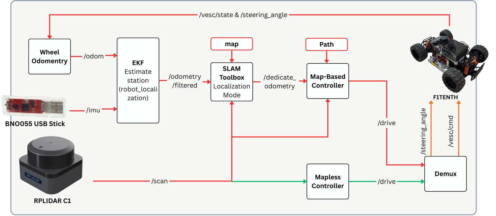

About the project
A head-to-head comparison of obstacle-avoidance strategies on a real 1:10 autonomous race car, built and tested by a team of five.
Map-based planners can exploit a known track but depend on good localization. Reactive methods need no map but only see what is directly ahead. The project measures that trade-off on the same car.
The map-based controllers use a pose from SLAM Toolbox on a frozen map, while the mapless controller works directly from the LiDAR scan. Every controller runs its own best tuning on the same track and starts from the same pose, so the comparison is fair.
The track is 120 to 160 cm wide, and obstacles up to 26 × 18 × 30 cm are placed in three scenarios. The obstacles are not in the saved map, so the map-based methods have to see them live.
Process
Build the car
The car runs a VESC-driven BLDC motor, a steering servo under micro-ROS on an STM32G474RE, an RPLIDAR C1 and a BNO055 IMU.
Localize on a frozen map
SLAM Toolbox in localization mode and an EKF fusing wheel odometry and IMU give every method the same pose estimate.
Implement the planners
Map-based Stanley avoidance and a lattice planner with Pure Pursuit go up against map-free Follow the Gap, with Pure Pursuit and Stanley as clean-track baselines.
Race and measure
Each method runs the clean track and three obstacle scenarios, logging lap time, cross-track error and heading error.
Results
- Localization stayed within the 0.05 m² covariance target in every trial.
- Stanley tracked the line best, with 0.070 m mean cross-track error on the clean track.
- Follow the Gap set the fastest laps, 24.98 s clean and 23.34 s with obstacles, but with 7.99° heading error RMS against 3.62° for Stanley.
Figures

Where it stands
Map-based methods drive more smoothly and precisely on a known track. The reactive method is faster and handles surprise obstacles without a map, at the cost of precision.
System
| Vehicle | 1:10 Ackermann RC car |
|---|---|
| Sensors | RPLIDAR C1, BNO055 IMU |
| Compute and drive | STM32G474RE with micro-ROS, VESC BLDC drive |
| Power | 2 × 4S LiPo, about 2.5 h |
| Software | ROS 2 Humble, SLAM Toolbox, robot_localization |
| Team | 5 people |